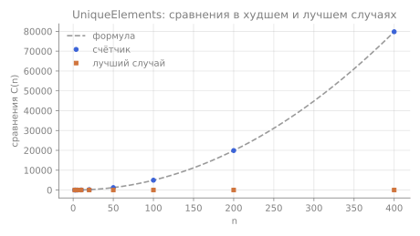
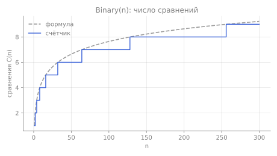
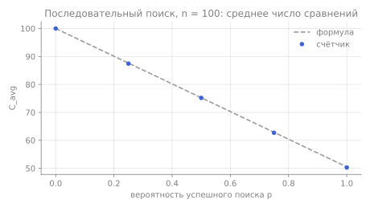
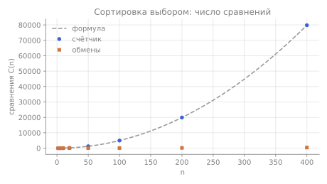
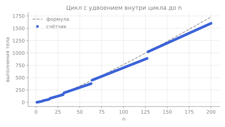

Модуль 1 · Лекция 4 · Левитин, §2.3
Анализ нерекурсивных алгоритмов
Как по псевдокоду с циклами получить точную формулу числа операций и класс эффективности.
Цели и результаты обучения
Цель модуля — научиться переводить циклы в суммы и вычислять их. Основы (размер входа, базовая операция, нотации, случаи) — во введении.
После модуля вы сможете:
- применять общий план анализа из пяти шагов к алгоритму с циклами;
- обоснованно выбирать размер входа и базовую операцию;
- записывать число операций суммой и находить её замкнутую формулу по правилам (R1), (R2), (S1), (S2) и формулам Приложения A;
- отличать худший, лучший и средний случаи и выводить средний случай последовательного поиска;
- находить в решениях шесть типичных ошибок;
- проверять выведенную формулу программой со счётчиком операций.
Общий план из пяти шагов
Это общий план анализа нерекурсивных алгоритмов (Левитин, §2.3). Каждый разбор ниже идёт строго по нему.
- Выбрать параметр размера входа. Без него «число операций» не с чем связать. Ошибка: взять значение числа вместо числа его битов.
- Определить базовую операцию. Как правило, она во внутреннем цикле и выполняется на каждой его итерации. Ошибка: выбрать операцию под условием (присваивание в if), которая выполняется не всегда.
- Проверить, зависит ли число её выполнений только от $n$. Если зависит ещё от содержимого входа, худший, средний и (при необходимости) лучший случаи исследуют отдельно. Ошибка: не заметить ранний выход и написать одну формулу «на все случаи».
- Записать сумму, выражающую число выполнений базовой операции: одна сумма на каждый цикл, границы суммы — границы цикла. Ошибка: сдвиг границ на единицу.
- Найти замкнутую формулу или хотя бы порядок роста по стандартным формулам и правилам. Ошибка: оставить ответ в виде суммы или потерять слагаемое при упрощении.
В конце каждого разбора указываем класс эффективности — простейшую функцию $g(n)$, для которой $C(n) \in \Theta(g(n))$.
Инструменты: суммы
Цикл for $i \leftarrow l$ to $u$ превращается в сумму $\sum_{i=l}^{u}$. Чтобы получить замкнутую формулу, хватает двух правил и нескольких формул.
Два правила
$$\sum_{i=l}^{u} c\,a_i = c\sum_{i=l}^{u} a_i \quad\text{(R1)} \qquad\qquad \sum_{i=l}^{u}(a_i \pm b_i) = \sum_{i=l}^{u} a_i \pm \sum_{i=l}^{u} b_i \quad\text{(R2)}$$(R1) выносит постоянный множитель, (R2) разбивает сумму на части. Ещё одно правило из Приложения A — разбиение по промежуточной границе: $\sum_{i=l}^{u} a_i = \sum_{i=l}^{m} a_i + \sum_{i=m+1}^{u} a_i$.
Основные формулы
Число слагаемых. Сумма единиц — это количество значений $i$ от $l$ до $u$ включительно:
$$\sum_{i=l}^{u} 1 = u - l + 1 \qquad (l \le u). \quad\text{(S1)}$$Именно «$+1$» чаще всего теряют. Проверка на пальцах: от 3 до 5 три числа, $5 - 3 + 1 = 3$.
Арифметическая прогрессия:
$$\sum_{i=1}^{n} i = 1 + 2 + \dots + n = \frac{n(n+1)}{2} \approx \frac12 n^2 \in \Theta(n^2). \quad\text{(S2)}$$Сумма квадратов и степеней:
$$\sum_{i=1}^{n} i^2 = \frac{n(n+1)(2n+1)}{6} \approx \frac13 n^3, \qquad \sum_{i=1}^{n} i^k \approx \frac{1}{k+1}\, n^{k+1} \in \Theta(n^{k+1}).$$ $$\sum_{i=0}^{n} a^i = 1 + a + \dots + a^n = \frac{a^{n+1} - 1}{a - 1} \ (a \ne 1), \qquad \sum_{i=0}^{n} 2^i = 2^{n+1} - 1.$$Последняя формула понадобится в модуле 2 для Ханойской башни и при подсчёте узлов в дереве вызовов.
Как считать вложенные суммы
Двойную сумму считают изнутри наружу: сначала внутреннюю сумму при фиксированном внешнем индексе. Пример — сумма, которая ниже встретится в UniqueElements:
$$\sum_{i=0}^{n-2}\ \sum_{j=i+1}^{n-1} 1 \overset{(S1)}{=} \sum_{i=0}^{n-2}\big[(n-1) - (i+1) + 1\big] = \sum_{i=0}^{n-2}(n-1-i).$$Слагаемые при $i = 0, 1, \dots, n-2$ равны $n-1, n-2, \dots, 1$. Это сумма (S2) до $n-1$: $\frac{(n-1)n}{2}$.
Разбор 1. Наибольший элемент: MaxElement
ALGORITHM MaxElement(A[0..n − 1])
//Определяет значение наибольшего элемента массива
//Input: массив A[0..n − 1] вещественных чисел
//Output: значение наибольшего элемента A
maxval ← A[0]
for i ← 1 to n − 1 do
if A[i] > maxval
maxval ← A[i]
return maxval
Разбор 2. Уникальность элементов: UniqueElements
ALGORITHM UniqueElements(A[0..n − 1])
//Проверяет, все ли элементы массива различны
//Input: массив A[0..n − 1]
//Output: true, если все элементы различны, иначе false
for i ← 0 to n − 2 do
for j ← i + 1 to n − 1 do
if A[i] = A[j] return false
return true
- массивы без равных элементов;
- массивы, где единственная пара равных стоит в двух последних позициях $A[n-2] = A[n-1]$ (она обнаруживается последним сравнением).
Лучший случай
У Левитина разобран только худший случай; лучший выведем сами. При фиксированном $n \ge 2$ ищем вход с наименьшим числом сравнений. Хотя бы одно сравнение выполняется всегда: внешний цикл начинается с $i = 0$, внутренний — с $j = 1$, и первое сравнение $A[0] = A[1]$ неизбежно. Если $A[0] = A[1]$, алгоритм сразу возвращает false. Значит,
$$C_{best}(n) = 1 \quad \text{на входах с } A[0] = A[1].$$Это не «маленький вход»: $n$ может быть миллионом, достаточно, чтобы первые два элемента совпали. Лучший случай здесь мало что говорит о практической работе: для типичных массивов без повторов алгоритм работает квадратично.
Разбор 3. Перемножение матриц
Произведение $C = AB$ двух матриц $n\times n$ по определению: $C[i,j] = \sum_{k=0}^{n-1} A[i,k]\,B[k,j]$.
ALGORITHM MatrixMultiplication(A[0..n − 1, 0..n − 1], B[0..n − 1, 0..n − 1])
//Перемножает две квадратные матрицы порядка n по определению
//Input: две матрицы n × n, A и B
//Output: матрица C = AB
for i ← 0 to n − 1 do
for j ← 0 to n − 1 do
C[i, j] ← 0.0
for k ← 0 to n − 1 do
C[i, j] ← C[i, j] + A[i, k] ∗ B[k, j]
return C
Оценка времени: $T(n) \approx c_m M(n) = c_m n^3$, где $c_m$ — время одного умножения. Если учесть и сложения (их тоже $A(n) = n^3$), то
$$T(n) \approx c_m n^3 + c_a n^3 = (c_m + c_a)\,n^3.$$Меняется только константа, порядок роста остаётся кубическим.
Разбор 4. Цикл с зависимой границей
В UniqueElements граница внутреннего цикла уже зависела от $i$. Разберём случай, где она растёт быстрее, — зависимая граница вида $i^2$:
ALGORITHM SquareBound(n)
x ← 0
for i ← 1 to n do
for j ← 1 to i ∗ i do
x ← x + 1
return x
Правило: если внутренний цикл зависит от $i$, сначала запишите число его повторений как функцию от $i$ (по $u - l + 1$), и только потом суммируйте по $i$.
Разбор 5. Мультипликативный цикл: Binary
В мультипликативном цикле переменная не увеличивается на единицу, а делится или умножается. Такой цикл проходит лишь немногие значения между границами, и формула (S1) не применяется.
ALGORITHM Binary(n)
//Input: положительное целое n
//Output: число цифр в двоичной записи n
count ← 1
while n > 1 do
count ← count + 1
n ← ⌊n/2⌋
return count
Тот же счёт для цикла с умножением: при $i \leftarrow 1$; while $i \le n$ do … $i \leftarrow 2i$ тело выполняется для $i = 1, 2, 4, \dots, 2^{\lfloor\log_2 n\rfloor}$, то есть $\lfloor \log_2 n \rfloor + 1$ раз.
Если такой цикл стоит внутри линейного, получается $\Theta(n\log n)$:
for i ← 1 to n do
j ← 1
while j ≤ n do
x ← x + 1
j ← 2 ∗ j
Внутренний цикл не зависит от $i$ и всегда делает $\lfloor\log_2 n\rfloor + 1$ сложений, поэтому $A(n) = n\left(\lfloor\log_2 n\rfloor + 1\right) \in \Theta(n\log n)$. Но если начать с $j \leftarrow i$, ответ неожиданно становится линейным — см. задачу C2. Рекурсивная версия Binary разобрана в модуле 2: BinRec.
Свой пример 1. Сумма элементов над главной диагональю
Этого примера нет ни в лекциях, ни у Левитина. Нужно сложить элементы квадратной матрицы, стоящие строго выше главной диагонали ($j > i$).
ALGORITHM SumAboveDiagonal(A[0..n − 1, 0..n − 1])
//Сумма элементов A[i, j] при j > i
s ← 0
for i ← 0 to n − 2 do
for j ← i + 1 to n − 1 do
s ← s + A[i, j]
return s
Вывод: одинаковые циклы дают одинаковые суммы, хотя задачи разные. UniqueElements перебирает пары, а здесь суммируются клетки треугольника. Отличие только в том, что ранний выход есть лишь в первом алгоритме.
Свой пример 2. Сортировка выбором: сравнения против обменов
Сам алгоритм есть у Левитина в §3.1; здесь он разобран по плану §2.3 с акцентом на выбор базовой операции: сравнения против обменов.
На каждом проходе находим наименьший элемент среди $A[i..n-1]$ и меняем его местами с $A[i]$.
ALGORITHM SelectionSort(A[0..n − 1])
//Сортирует массив по неубыванию выбором минимума
for i ← 0 to n − 2 do
min ← i
for j ← i + 1 to n − 1 do
if A[j] < A[min] min ← j
swap A[i] and A[min]
Вывод: выбор базовой операции зависит от того, что дорого. Если элементы — большие записи, которые дорого перемещать, линейное число обменов — главное достоинство сортировки выбором. Но время работы всё равно определяют $\Theta(n^2)$ сравнений.
Средний случай: последовательный поиск
Для последовательного поиска (псевдокод — во введении) $C_{worst}(n) = n$, $C_{best}(n) = 1$. Чтобы найти средний случай, нужны явные допущения о входах. Левитин делает два стандартных допущения:
- (а) поиск успешен с вероятностью $p$ ($0 \le p \le 1$);
- (б) при успешном поиске первое совпадение с равной вероятностью стоит в любой из $n$ позиций.
Разобьём все входы на классы с одинаковым числом сравнений:
- первое совпадение в позиции $i$ ($i = 1, \dots, n$): ровно $i$ сравнений, вероятность $\frac{p}{n}$;
- ключа нет: $n$ сравнений, вероятность $1 - p$.
Математическое ожидание:
$$C_{avg}(n) = \left[1\cdot\frac pn + 2\cdot\frac pn + \dots + n\cdot\frac pn\right] + n(1-p) = \frac pn\cdot\frac{n(n+1)}{2} + n(1-p) = \frac{p(n+1)}{2} + n(1-p).$$Две проверки на крайних значениях:
- $p = 1$ (ключ точно есть): $C_{avg} = \frac{n+1}{2}$ — в среднем просматривается половина массива;
- $p = 0$ (ключа точно нет): $C_{avg} = n$ — просматриваются все элементы.
Средний случай нельзя получить как среднее худшего и лучшего: $C_{avg}(n)$ совпадает с $\frac{1+n}{2}$ лишь при $p = 1$ (или $n = 1$), а при $p = 0$ равен $n$. Допущения (а) и (б) удобны, но их трудно проверить на реальных данных. Если вероятности позиций другие, ответ меняется — см. задачу C1.
Типичные ошибки
Не та базовая операция
Выбрана операция, которая выполняется не на каждой итерации (присваивание под if в MaxElement), или служебная операция цикла. Проверка: выполняется ли выбранная операция при любом входе на каждом шаге внутреннего цикла? Задача A1.
Размер против значения
Если вход — одно число $n$, его размер — число битов $b \approx \log_2 n$. Алгоритм с $\Theta(n)$ или $\Theta(\sqrt n)$ операциями экспоненциален по $b$. Задача Ф2.
Путаница случаев
Лучший случай — не маленький вход. Средний — не полусумма худшего и лучшего. Худший — не «самый большой массив», а самое неудобное содержимое при данном $n$. Задача B3.
Ошибка на единицу
Ошибка на единицу — $u - l$ вместо $u - l + 1$, $n - i$ вместо $n - 1 - i$. Порядок роста обычно не меняется, но точная формула неверна, и счётчик в программе её опровергнет. Лучшая защита — проверить формулу при $n = 1, 2, 3$. Задача Ф1.
Ранний выход
Return внутри цикла или составное условие while делают число операций зависимым от входа. Нужно описать вход, на котором выхода нет (худший случай), и вход, где он происходит сразу (лучший). UniqueElements.
Скрытая стоимость
Скрытая стоимость: одна строка псевдокода или программы может быть циклом. Проверка if x in lst в Python — это последовательный поиск ($\Theta(n)$), срез A[1:] копирует массив, сложение длинных строк копирует обе строки. Цикл из $n$ итераций с x in lst внутри стоит $\Theta(n^2)$, а не $\Theta(n)$.
def has_duplicates(a):
seen = []
for x in a: # n итераций
if x in seen: # скрыто: до len(seen) сравнений
return True
seen.append(x)
return False # худший случай: 0 + 1 + ... + (n-1) = n(n-1)/2 сравненийКлассы эффективности на графике
Итог шага 5 — класс эффективности. Сравните основные классы: переключайте функции и меняйте диапазон $n$. Включите $2^n$ и посмотрите, как быстро экспонента обгоняет даже $n^3$. На логарифмической шкале экспонента выглядит прямой линией.
Эмпирическая проверка
Выведенную формулу полезно проверить программой. Эмпирический анализ (Левитин, §2.6) идёт по плану:
- Понять цель эксперимента: здесь — проверить теоретическую формулу.
- Выбрать метрику: счётчик базовой операции (а не время — оно зависит от машины и шумит).
- Выбрать характеристики выборки: размеры $n$ (удобно удвоением: 10, 20, 40, …) и виды входов (худшие, лучшие, случайные).
- Написать программу с счётчиком. Если базовая операция встречается в нескольких местах кода, считать нужно все.
- Сгенерировать входы.
- Запустить и записать данные.
- Проанализировать: сравнить с формулой, посмотреть на отношения $C(2n)/C(n)$ — около 2 для линейных, 4 для квадратичных, 8 для кубических алгоритмов.
Пример счётчика для UniqueElements. Счётчик увеличивается до сравнения, чтобы учесть и то сравнение, которое вызвало выход:
def unique_elements(a):
count = 0
n = len(a)
for i in range(n - 1):
for j in range(i + 1, n):
count += 1 # базовая операция: A[i] = A[j]
if a[i] == a[j]:
return False, count
return True, count
for n in [2, 5, 10, 50, 100, 400]:
_, c = unique_elements(list(range(n))) # худший случай: все различны
print(n, c, n * (n - 1) // 2, c == n * (n - 1) // 2)Полный набор скриптов — в папке code/ (см. описание). Каждый печатает таблицу «$n$ | счётчик | формула | совпадает» и строит график. Результаты:


1 ступенчато растёт как floor(log2 n) + 1">


Выводы. Для MaxElement, UniqueElements, перемножения матриц, Binary, сортировки выбором, суммы над диагональю и циклов с зависимой границей счётчик совпал с формулой при всех проверенных $n$. Средний случай поиска совпал в пределах статистической погрешности. Опыт подтвердил и то, что у MaxElement число присваиваний меняется от входа к входу (999, 0 и 8 при $n = 1000$ для возрастающего, убывающего и случайного массивов), а число сравнений — нет. Это эмпирическое обоснование выбора базовой операции.
Квиз модуля 1
Десять вопросов: термины, выбор базовой операции, суммы и порядок роста. Прогресс сохраняется в браузере.
Задачи
У каждой задачи три раскрывающихся блока: подсказка, ответ и полное решение. Сначала попробуйте решить сами.
Уровень A: прямое применение
Уровень B: вложенные суммы и случаи
Уровень C: средний случай и логарифмические циклы
Найди ошибку
Эмпирическая задача
Резюме
- Анализ нерекурсивного алгоритма идёт по пяти шагам: размер → базовая операция → случаи → сумма → замкнутая формула и класс.
- Базовая операция выполняется на каждой итерации внутреннего цикла: сравнение в MaxElement и UniqueElements, умножение (по традиции) в перемножении матриц, сравнение $n > 1$ в Binary.
- Цикл превращается в сумму, вложенные циклы — во вложенные суммы, которые считают изнутри наружу. Главное — число слагаемых $u - l + 1$.
- Ранний выход порождает худший и лучший случаи. Средний случай требует явных допущений; для поиска $C_{avg} = \frac{p(n+1)}{2} + n(1-p)$.
- Мультипликативный цикл даёт логарифм: $\lfloor\log_2 n\rfloor + 1$ повторений.
- Формулу всегда можно проверить: на малых $n$ вручную и программой со счётчиком.